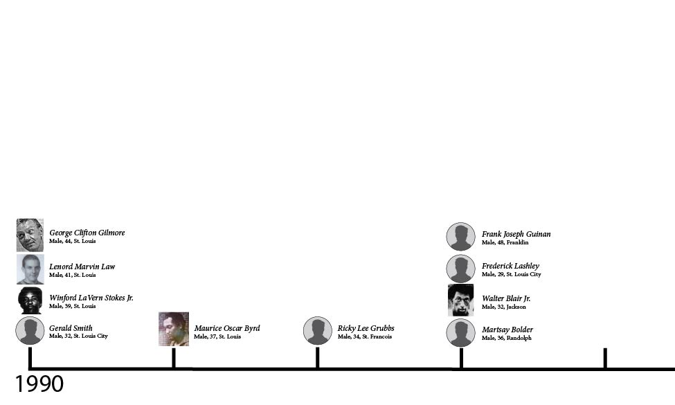
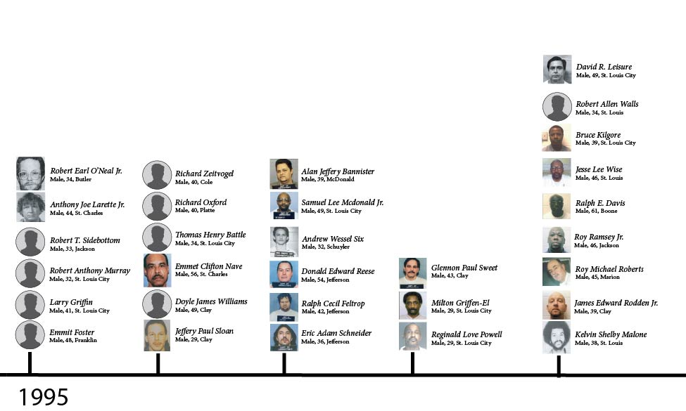
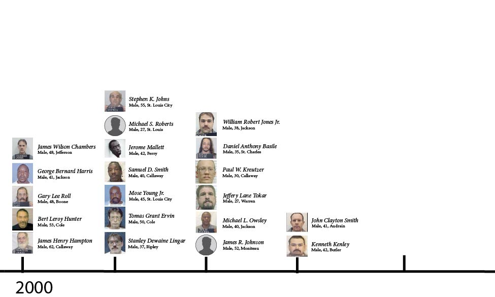
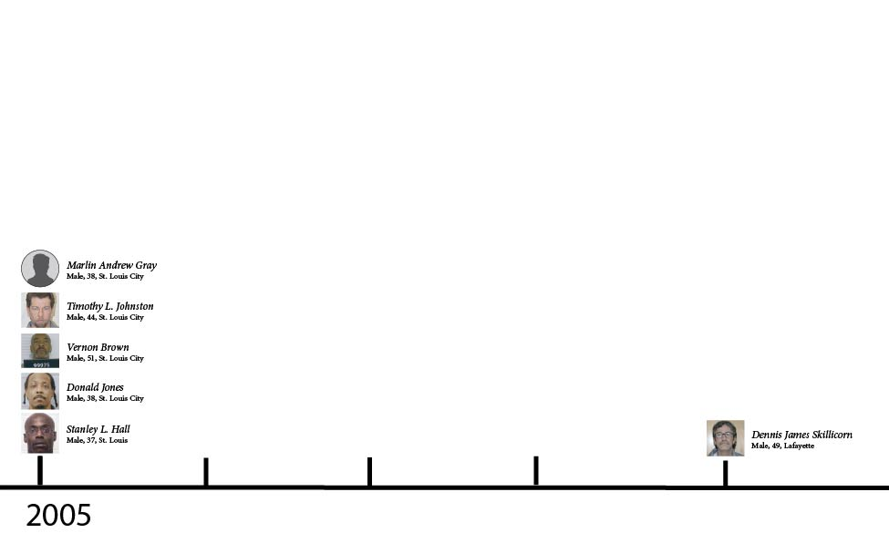
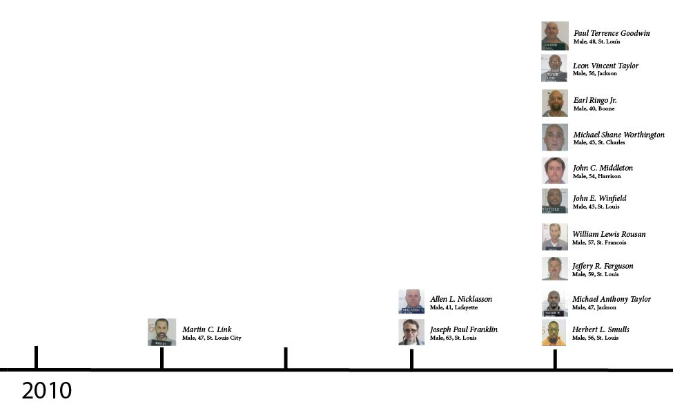
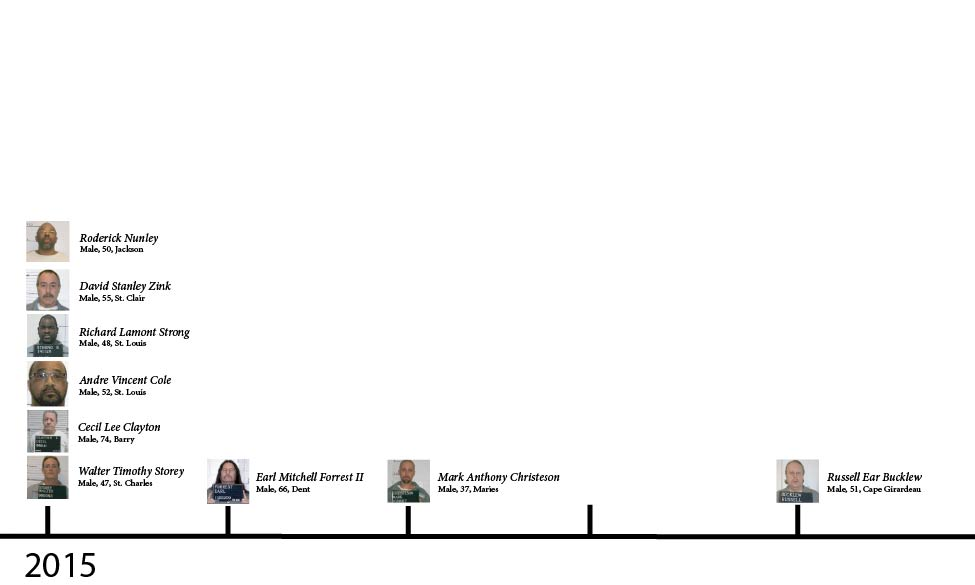
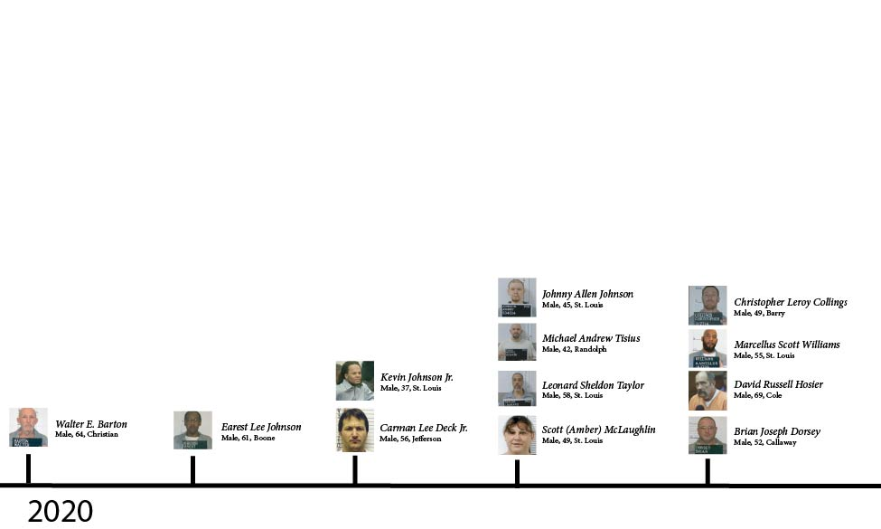

Maurice Oscar Byrd: Executed in August of 1991.
Convicted in 1980 for Pope's Cafeteria massacre in Des Peres, Byrd herded four cafeteria workers into a back office and killed them execution style to rob the safe of $9,000.
Byrd attempted to fight his conviction for nearly a decade. This made his case gain an immense amount of media coverage. He argued that the all-white jury was racially biased. His trial ultimately proceeded.
Fredrick Lashley: Executed in July of 1993
At age 17, Lashley was convicted of the killing of two people during a $15 robbery. Because he was 17, his case became a major topic regarding the execution of minors and whether it was constitutional or not.
Even though it was under major controversy, his case was upheld by a 7-2 majority in the U.S. Supreme Court. His case is Missouri's only juvenile offender executed since the U.S. death penalty was reinstated in 1976.

Kevin Shelby Malone: Executed in January of 1999
Convicted as the Interstate Spree Killer, Malone was sentenced to death in both California and Missouri.
In 1981, Malone escaped from a county jail in California and went on a multi-state violent crime spree, spanning from California to Missouri.
Malone was convicted and sentenced to death in Missouri for the 1981 kidnapping and shooting of a St. Louis taxi driver. He was also convicted of two additional murders in California and was the prime suspect in at least two other deaths.
Since he was convicted in both states, a legal battle occurred over which state had primary right to carry out his death sentence. For over a decade Malone was held on death row in California, but since the appeal process was so delayed, Missouri petitioned to take custody of Malone to execute him first.
In 1998, California had officially sent him to Missouri, where he was executed a few weeks later.

In 2001, Missouri became the 16th state to ban the execution of prisoners who have intellectual disabilities as it is considered unconstitutional under the Eighth Amendment.
Bert Leroy Hunter: Executed in June of 2000.
Hunter made headlines due to his improper lethal injection that caused convulsions and left Hunter gasping for air in his final moments. This moment sparked many debates over the current capital punishment protocols.

Roper v. Simmons: The U.S Supreme Court ruled that for those under the age of 18 at the time of their crime, execution is considered unconstitutional under the Eighth Amendment.
In 2007, the Missouri legislature defeated a bill that would have made the sentence for anyone who murders law enforcement officers a mandatory death penalty sentence.
Vernon Brown: Executed in May of 2005
Convicted for the murder of a 9-year-old in 1996, Brown was also separately convicted of the 1995 murder of a 19-year-old girl that followed similar patterns and methods to that case.
Brown's case created a suspected serial killer status. His convictions in 1996 heavily connected him to dozens of other cold cases, two of which investigators and criminologists subsequently linked him to. To this day, he is the prime suspect in up to 20 other unsolved homicides and sexual assaults in the St. Louis area.

Joseph Paul Franklin: Executed in November of 2013
Convicted in 1977 for the sniper murder of Gerald Gordon outside a suburban synagogue in St. Louis, Franklin was considered a white supremacist serial killer. He was found to have spent years traveling across the U.S. committing racially motivated sniper attacks, synagogue bombings and bank robberies. Franklin confessed up to 20 murders.
His execution marked the debut of Missouri's controversial new single-drug lethal injection protocol.
Allen Nicklasson: Executed in December of 2013
Nicklasson's execution sparked a public constitutional shutdown between the governor and the Missouri Supreme Court over the ethics of lethal injection drugs.
Originally scheduled to be executed in October 2013, Nicklasson wasn't executed until two months later. Missouri had covertly acquired propofol from the drug's manufacturer, which was based in Europe, a place where capital punishment was banned. When the European Union found out about the use of propofol, it threatened to halt the export of the drug to the United States if Missouri continued to use it for executions. Out of fear for the possible nationwide hospital shortage of a vital anesthetic, Missouri Gov. Jay Nixon halted the execution and ordered the state to return the propofol.
Nicklasson was executed with pentobarbital, and his case left a legacy regarding the global politics of execution drugs.

Cecil Clayton: Executed in 2015
Clayton was a 74-year-old man who had a traumatic incident back in 1972. A large splinter of wood ricocheted off his saw blade and pierced his skull. This destroyed about 8% of his brain, and doctors had to remove a fifth of his frontal lobe leaving him mentally impaired. This part of the brain is responsible for impulse control and problem solving. When reviewing his brain scan during the trial, his attorney said he "had literally a hole in his head."
Clayton was sentenced to death for the killing of police officer Christopher Casetter in 1996. During his trial, medical experts who examined Clayton while he was held in prison found that at age 74, Clayton was incapable of caring for himself. He was diagnosed as intellectually disabled with an IQ of 71. For reference, the average American IQ is 90-109, 80-90 is considered low average and 71-79 is borderline intellectually disabled. The threshold for intellectual disability is 70 and below.
Before Clayton's execution, Clayton's attorney sought a mental competency hearing before his execution because of Missouri's ban on the execution of prisoners with intellectual disabilities. Inmates facing execution are entitled to a competency hearing where evidence of mental incapacity can be heard and assessed by a court.
The Missouri Supreme Court ultimately ruled 4-3 to deny the hearing. The majority found the evidence of Clayton's brain damage and the testimonies from psychiatrists wasn't enough to hold a hearing on his competency.

Amber McLaughlin: Executed in January of 2023
When first convicted back in 2003, McLaughlin was living as a male by the name of Scott McLaughlin. She transitioned to female while she was incarcerated in 2020 and lived her final three years as Amber. She is the first ever openly transgender person to be executed in the United States.
Missouri's most recent execution was of inmate Lance Shockley.
Shockley was convicted for the murder of Missouri State Highway Patrol Sgt. Carl Graham Jr. Graham was under investigation of manslaughter of a passenger who was killed while riding in the car with Shockley. Reports say that Shockley went to Graham's home and shot him three times. Once to the spinal cord along with a fatal shot to the face and shoulder. Shockley was unanimously convicted of first-degree murder as well as charged with three aggravating factors. Gov. Mike Kehoe ordered the execution of Shockley in October 2025.
“Violence against those who risk their lives every day to protect our communities will never be tolerated. Missouri stands firmly without men and women in uniform.” - Gov. Mike Kehoe